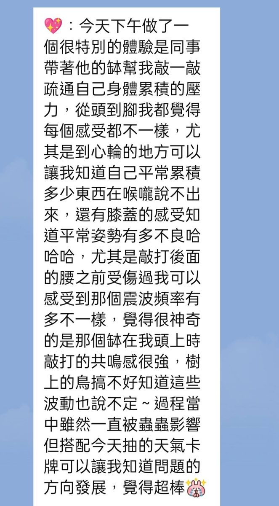
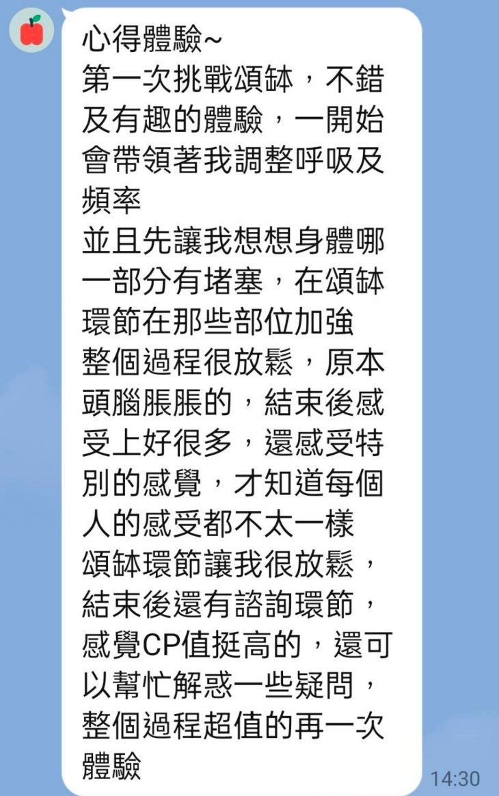
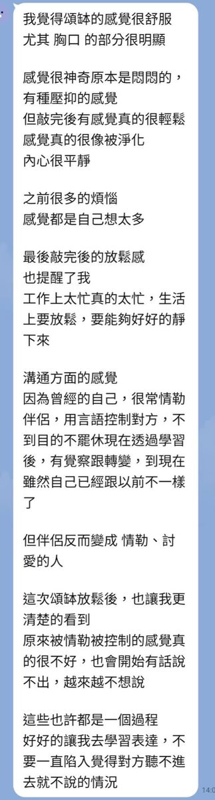
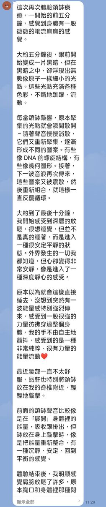
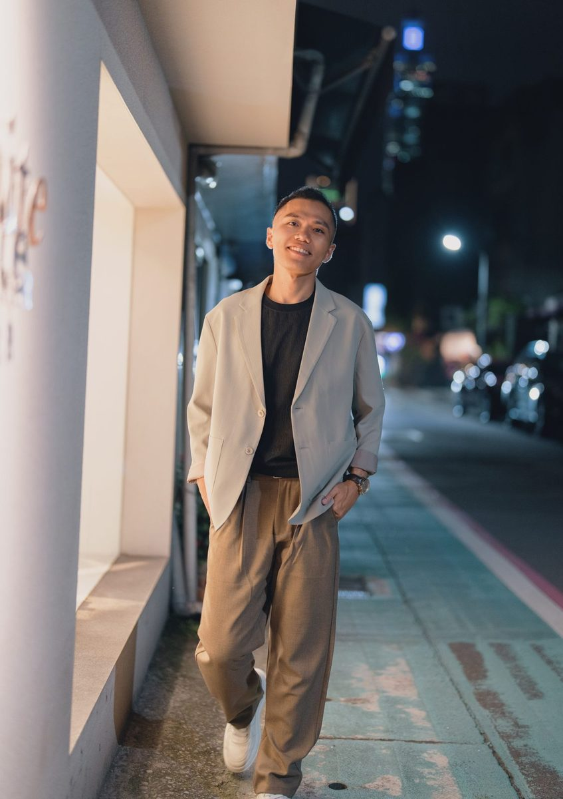

一場聲音與對話交織的體驗，陪你穿越卡住的地方 重新看見自己的下一步
加入 LINE，預約體驗這不是紓壓按摩，也不是聊天。
覺得哪裡卡住了，卻說不清楚是什麼——
不是要幫你解決問題，而是想陪你看見真實透過聲音的振動與一場真誠的對話，讓堵住的地方重新流動，從迷茫裡看見方向，找到願意踏出的下一步
透過提問與聊天，陪你看見自己一直沒察覺的盲點與慣性
缽的振動穿過身體，陪你卸下不自覺的防備，回到當下，重新感受自己的呼吸與重量


以前聽覺敏感、做過的舒壓方式讓我痛過，一開始很擔心。這次接受頌缽，卻放鬆到睡著，回家也一夜好睡。
聲音繞過耳朵的瞬間，緊繃的神經慢慢鬆開。結束後不是亢奮，而是專注力提升的清醒。


正站在人生的十字路口，一時看不清下一步
常常想很多，卻很難真正安靜下來感受自己
渴望被真正聽懂，而不是被急著給建議
相信真實比正確更重要，感知比分析更根本
先聊聊你現在卡在哪裡，為什麼是現在想來。
頌缽的振動陪你放下不停轉動的思緒，回到身體與呼吸本身。
用簡單而誠實的對話，梳理出一個你真正願意帶走的方向。

深耕頌缽療癒與身心對話領域，擁有豐富的個案陪伴經驗。曾協助上百位來訪者穿越內在卡點，從迷茫中找到方向。相信每一個人都有自癒的力量，療癒師只是那個陪你重新看見的人。
我不是站在山頂的導師，而是正在爬山、同時回頭拉人的人。
很多人講出自己的困惑那一刻，其實答案早就在心中只是平常外面太吵，很難好好聽自己聲音如果你也願意練習聽見自己的聲音歡迎一起加入 「魔法師團-人生自我調頻」練習聽自己、也聽見彼此